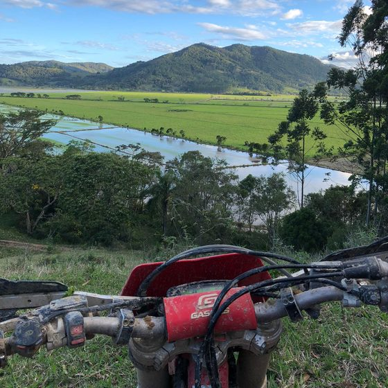
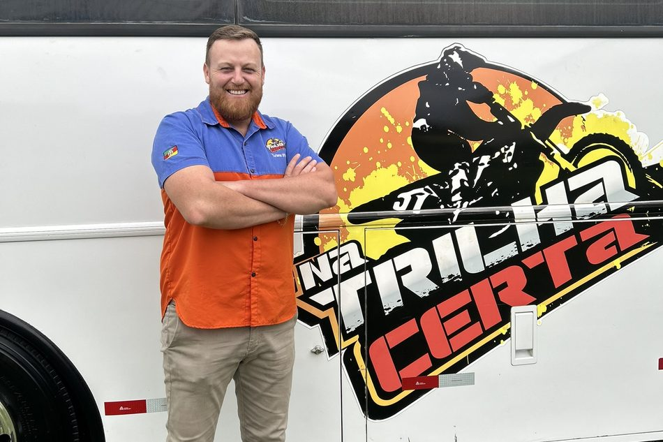
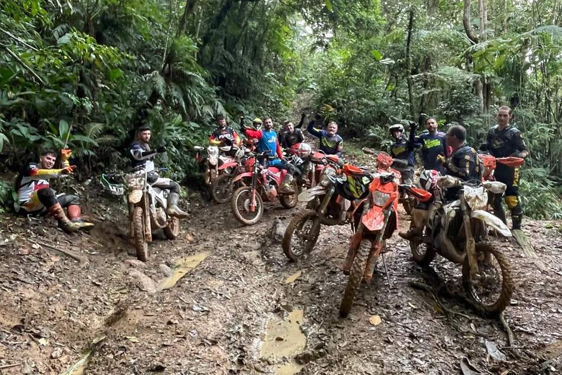
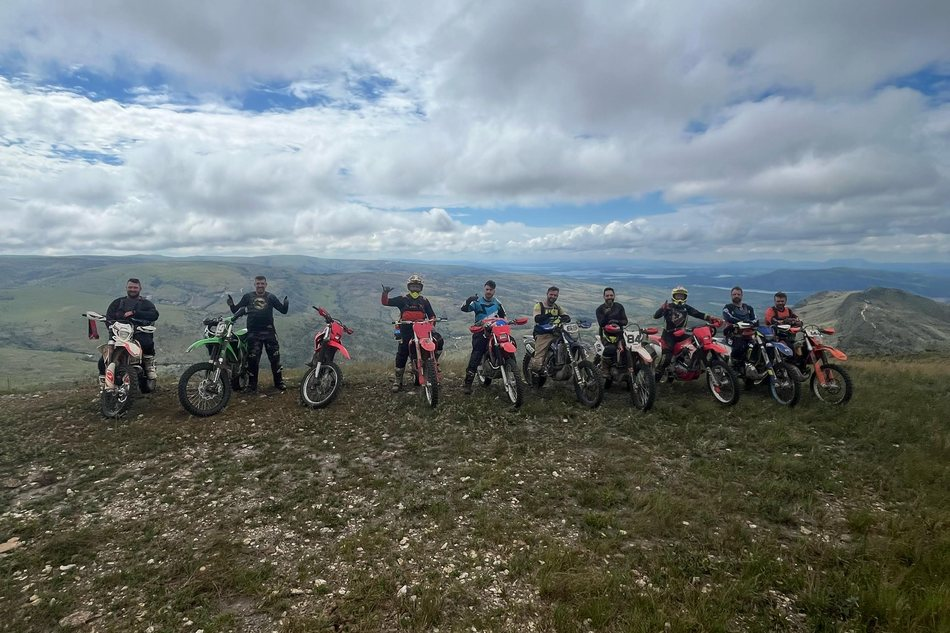
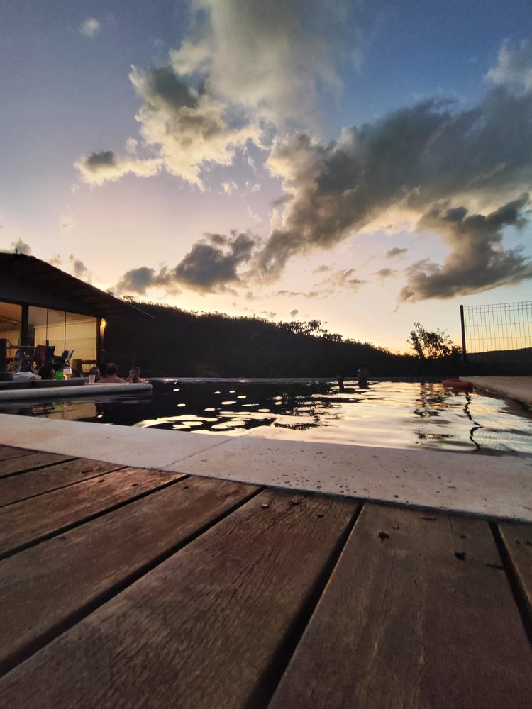

Logística de ponta a ponta
Transporte especializado da moto e vaga garantida no ônibus executivo unificado, com Starlink, ar-condicionado e USB. Coleta e devolução porta a porta. O transporte local no destino também é por nossa conta.
Expedição off-road all-inclusive. Buscamos a sua moto na porta de casa e cuidamos de todo o resto.
Garantir minha vaga



Seis dias, do embarque na sua porta até a devolução da moto no mesmo lugar.
Planilha 01/04
Dias 1 e 2
Embarque
Coleta porta a porta das motos e embarque unificado no ônibus executivo, com Starlink, ar-condicionado e USB. Open bar e open food liberados desde a saída.
No dia 2, check-in na Pousada Pai & Filho, descarregamento das motos, briefing técnico de segurança e a primeira aceleração nas trilhas. Jantar incluso.

Dia 3
Canastra
Café da manhã e saída para o primeiro circuito intenso. Progressão técnica o dia inteiro nos melhores traçados da Serra da Canastra, com guias locais experientes na frente do grupo.
Retorno para a base no fim da tarde e jantar incluso.

Dia 4
Furnas
A janela de recuperação. As motos descansam e o grupo desce até o píer para um tour exclusivo de lancha pela Represa de Furnas, navegando entre os cânions e parando nos bares flutuantes.
Noite de confraternização na base.

Dias 5 e 6
Retorno
Última sessão de trilhas no Vale da Babilônia. Check-out, carregamento das motos e embarque de volta no ônibus, com o open bar reativado.
O dia 6 marca a chegada à noite e a entrega oficial das motos e dos pilotos, porta a porta.

São 15 vagas por saída.
Garantir minha vagaToda a infraestrutura em um único investimento, para você não precisar resolver nada.
Transporte especializado da moto e vaga garantida no ônibus executivo unificado, com Starlink, ar-condicionado e USB. Coleta e devolução porta a porta. O transporte local no destino também é por nossa conta.
Pousada com café da manhã e jantar servidos todos os dias, mais open bar e open food de estrada dentro do ônibus.
Guias locais do começo ao fim, traçados técnicos mapeados na Serra da Canastra e suporte em tempo real na trilha.
Passeio de lancha garantido na Represa de Furnas, com navegação pelos cânions e parada nos bares flutuantes.
Na Trilha Certa nada disso é problema seu. Montamos a operação inteira para que você saia de casa e chegue direto no off-road com os amigos.
Você investe no lazer. A gente entrega a operação.

Turma fechada, com os 10% de desconto já aplicados no valor abaixo.
Sinal para garantir a vaga
R$ 1.497,50
mais 10 parcelas de R$ 449,25
No boleto, com vencimento no dia 7, 14 ou 21. Você escolhe.